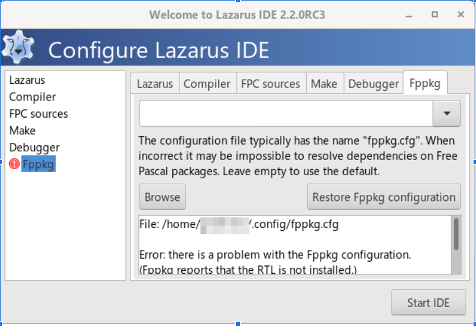
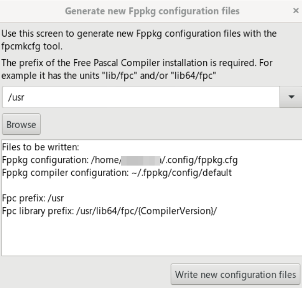

Algumas vezes, ao executar o programa pode aparecer a seguinte mensagem:

Pelas minhas observações, ela acontece porque o arquivo onde é guardado algumas configurações não existe, está corrompido ou você acabou de fazer uma instalação limpa. Como arquivo de configuração você poderá usar o padrão que ele oferece que é ~/.config/fppkg.cfg.
Não é preciso se alarmar com a mensagem, apenas clique em
Restore Fppkg configuration e então surgirá essa tela:

Se você indicar /usr como sugerido, a IDE achará então que o freepascal estará numa arvore /usr como /usr/lib64/fpc, /usr/bin, etc... será que isso é verdade? Vamos ver:
rpm -ql fpc|head -10|grep /usr
Como podemos confirmar acima , aparentemente /usr é o prefixo onde o Free Pascal instalou realmente seus arquivos, então podemos confirmar /usr na tela acima e posteriormente Start IDE.